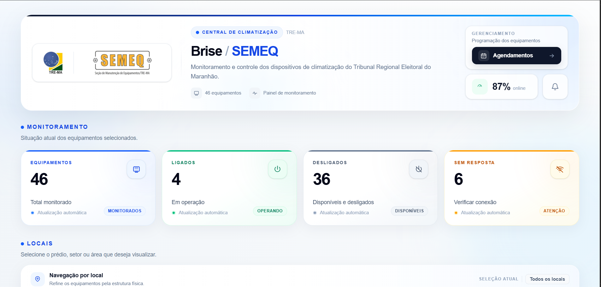
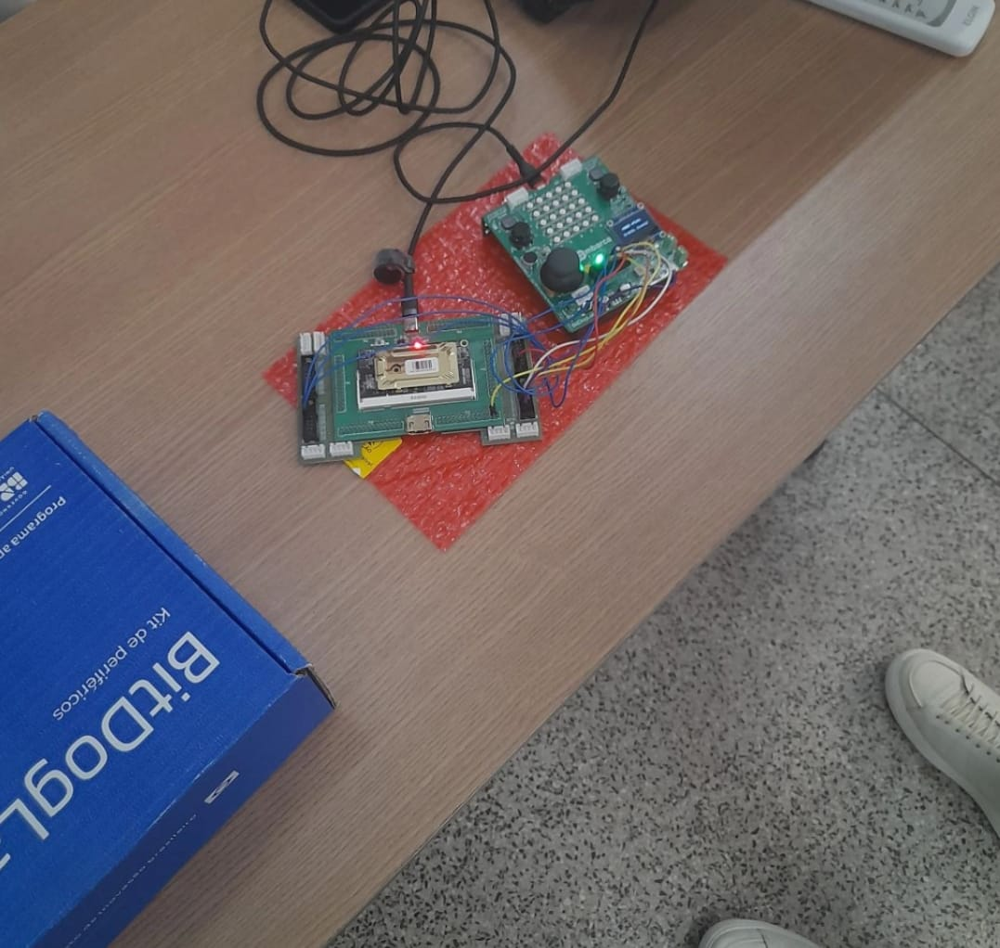
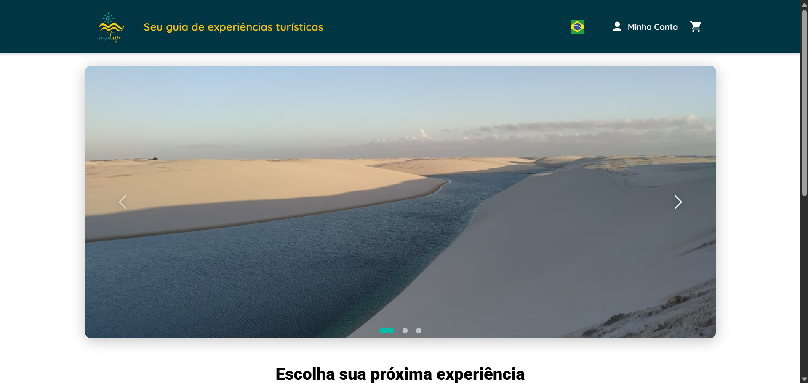

Interface Web BRiSE
Interface desenvolvida para monitoramento e gerenciamento dos dispositivos de climatização do Tribunal Regional Eleitoral do Maranhão.
Acessar projeto →Desenvolvedor Front-end no Programa Trilhas
Sou estudante de Engenharia Elétrica pela Universidade Federal do Maranhão (UFMA), com interesse em tecnologia, automação, sistemas embarcados e desenvolvimento de software.
Atualmente participo do Programa Trilhas Inova 3 como bolsista na trilha de Desenvolvimento Front-end, onde venho desenvolvendo conhecimentos em HTML, CSS, JavaScript, responsividade e experiência do usuário.
Minha trajetória também envolve experiências com automação e controle, manutenção e projetos elétricos, sistemas embarcados, FPGA e desenvolvimento web.
Meu objetivo é continuar evoluindo profissionalmente, unindo engenharia, programação e tecnologia para criar soluções modernas, úteis e bem construídas.

Interface desenvolvida para monitoramento e gerenciamento dos dispositivos de climatização do Tribunal Regional Eleitoral do Maranhão.
Acessar projeto →
Sistema híbrido de gerenciamento energético desenvolvido com FPGA e BitDogLab, utilizando máquina de estados para controle dos modos elétrico, diesel, híbrido e frenagem regenerativa.
Acessar projeto →
Plataforma digital de turismo desenvolvida para conectar turistas, guias e agências, com cadastro de passeios, compra de serviços e gerenciamento integrado.
Acessar projeto →